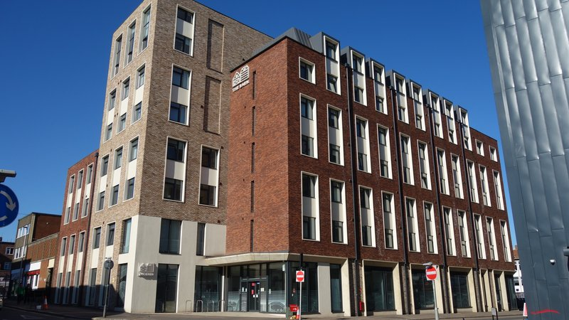

Exeter City Council first recognised the now familiar consequences of the university’s expansion fifteen years ago, when it responded to the university’s new estates strategy. This made clear that recently-installed Vice Chancellor Steve Smith had big ideas about the future growth of student numbers in Exeter.
The council strategy referred to “the impact on the local community of students living off-campus, particularly in areas close by where many students choose to live” and recognised that “students raise issues of car parking, anti social behaviour, increased rent levels and effects on local demography”.
It also set the template for the council’s subsequent policy-making non sequiturs, which began with the assumption “that the private sector will provide space equivalent to about 25% of the growth” despite also admitting that this assumption “appears challenging since the sector accommodates about 50% of existing students”.
Fast forward to November this year, and the hearing given to a petition presented by Pennsylvania residents aimed at protecting them from the encroachment of landlords snapping up the remaining residential housing in their area to turn it into shared student housing.
The city council’s initial response to the petition was to propose to do nothing, at least until the new local plan had been adopted, following its form on previously-promised policies on low carbon construction and co-living which have also been postponed for at least several more years.
Then, perhaps recognising the ire that council officers’ intransigence was causing, the council’s Executive committee first deferred the decision until the end of the month then amended the proposal to task officers with the preparation of another report, delivery date unspecified, on whether the council might address the Pennsylvania petitioners’ concerns after all.
However the issues raised by their petition, the latest in more than a decade of similar responses by Exeter residents to the impact of university expansion, run much deeper than the limited scope of the review that may be on offer when officers report back to Executive members.
In this special report, we examine the growth of university student numbers and its impact on residential housing in the city alongside Exeter City Council’s flawed attempts to use planning policy to mitigate that impact.
We find that while the number of students has soared, the council’s policies have failed to prevent mass student occupation of residential housing stock, despite the proliferation of Purpose Built Student Accommodation, and now co-living, across the city.
We also find that the council’s responses to the Pennsylvania petitioners are the latest in a long line of officer reports to councillors which rely on faulty premises, inaccurate information and miscalculated projections and which have repeatedly misrepresented the situation but nevertheless provided the basis on which student accommodation policy has been made.
Pennsylvania housing stock in Sylvan Road
University of Exeter student numbers have been at the centre of city council student accommodation policy-making since November 2006, when the council produced the first of many reports on the impact of university expansion on the city.
The council’s first subsequent related planning policy, made a few months later, “supported the intention of the university to expand” without grappling with those numbers. A public consultation followed, which produced another policy in February 2008 which did, instead, lead with the numbers.
Unfortunately, those numbers were based on the first of several faulty assumptions made by the council about student accommodation which have bedevilled its policy-making ever since.
Referring back to its 2006 reports, the council said that around 17% of the university’s then students were “assumed to live at home in Exeter or nearby”. However figures that were published more recently by the Higher Education Statistic Agency (HESA) and the university itself show that only around 6% of Exeter students live at home.
The council also accepted the university’s student growth projections, which in 2008 were that it expected to have around 12,000 Full-Time Equivalent (FTE) students in Exeter by the following academic year, rising to 15,000 by 2015-16. (FTE student numbers are intended to combine full-time and part-time students into a single total used for planning educational provision, while total numbers of students should be used to plan for student accommodation.)
However, the university actually had more than 13,000 FTE students by 2008-9 and grew to have nearly 17,500 by 2015-16.
Perhaps the university deliberately downplayed its expectations. It certainly didn’t welcome the prospect of restrictions on its expansion. A council report on its draft 2008 planning policy guidance included a telling description of the university’s response:
“By adding additional constraints, the guidance runs the risk of being ‘part of the problem’ rather then a positive planning measure. The university regard[s] the focus on achieving a ‘mixed community throughout the year’ as a questionable planning objective. […] Accordingly the university suggests that the draft SPG is not adopted.”
Polsloe housing stock in Monks Road
The following year the city council introduced another unsubstantiated assumption into its student accommodation impact assessments which further distorted the figures. It added part-time students, most of whom live at home and are members of the wider community, to the full-time students it said also lived at home, discounting both groups from the numbers that require term-time accommodation.
However, HESA figures show that most of the 7% of the university’s students who attend part-time coincide with the 6% who live at home, as would be expected.
The city council has nevertheless since typically derived its figures for the number of students that need term-time accommodation, as the basis for its student accommodation policy-making, by starting with FTE numbers then subtracting both part-time students (instead of recognising that the true number of students is greater than the FTE figure) and full-time students (who it says also live at home).
This consistently produces figures that are significantly lower than the true number of students who live away from home in Exeter during term-time.
And despite ready access to relevant HESA and university data, and being corrected by an independent academic report it commissioned to examine Exeter’s student accommodation issues in 2018 (which it has not published), the city council has not changed its approach.
For example, earlier this year a report (which it also has not published) to Planning Member Working Group (which is comprised of members of the council’s planning committee who meet in private to discuss planning policy issues) said that 21,760 students had needed term-time accommodation in Exeter during the 2019-20 academic year. Council officers had calculated this figure by starting with 22,360 Exeter FTE students then subtracting a total of 1,568 part-time and live-at-home students.
However HESA confirms that there were actually 24,357 university students in Exeter that year, of whom around 22,895 needed term-time accommodation, 1100 more than the council said.
The difference is the equivalent of around 300 typical Exeter shared student houses. That’s three times as many houses as there are in Victoria Street, which stretches from Union Road to the railway cutting that runs through the heart of St James.
 St James housing stock in Victoria Street
St James housing stock in Victoria Street
Perhaps it’s not surprising that city council officers have got these numbers wrong so often: the university itself frequently misquotes information on student numbers in its own annual reports and financial statements.
The university can also be remarkably coy about historic student numbers: it refuses freedom of information requests for this data on the grounds it is commercially sensitive, instead referring requesters to a private sector data platform which typically charges £1,500 + VAT for such information.
Nevertheless, the consistency with which the council has underestimated student numbers growth is still striking. In 2006 it projected 14,965 Exeter FTE students by 2015-16. The true figure was 17,399. In 2009 it increased this projection by only 1,000 despite Exeter student numbers rising by more than 4,000 in the three years following the 2006 strategy.
Then in 2016 it made an even more egregious error in a report to Planning Member Working Group (which it has not published). It presented the number of Exeter FTEs as 18,038 that year when the true number was already 19,772 — and projected an increase to 18,600 three years later despite that number already being exceeded. The true 2019-20 number was 22,685.
Amazingly, officers again repeated this mistake in the council’s 2019 report (which has also not been published). It claimed 21,956 Exeter FTEs that year when the true number was already 22,685 and projected 22,879 for the following year, by which time the true number had already leapt to 24,586.
City council planning policies contain similar errors. The 2010 Streatham campus masterplan, which is still in force and is supposed to guide development to 2026, was based on the projection that there would be 15,800 FTE students on the campus by 2025-26. There were already nearly 1,500 more than this by 2016, nine years earlier than that. And Councillor Rachel Sutton, in the preface, said there were 10,700 FTE students enrolled at Streatham at the time, when there were 11,500.
The 2012 Exeter Core Strategy, which is the city’s principal planning policy document, is similarly based on a projection that the number of full-time students living away from home in Exeter would be just 16,229 by 2025-26. This is despite a Planning Member Working Group report from the same year concluding that “overall the university will increase from about 16,000 students in 2011 to about 20,000 in 2018”. The true number passed 20,000 in 2015, ten years earlier, according to HESA.
Then in 2014 the city council amended a 2011 Supplementary Planning Document, which also forms part of the local plan, which had projected just 18,700 Exeter FTE students by 2025-26, to create a new Supplementary Planning Document based on figures supplied by the university.
These projected 18,000 Exeter FTE students by 2018-19, seven years earlier than the previous policy. The true number of Exeter FTE students by 2018-19 was 23,613.
In 2015, when the government removed the cap on student numbers that had previously limited each university’s intake, the city council commissioned external research on student accommodation issues in Exeter by Professor Darren Smith of Loughborough University.
Professor Smith is known for coining the term “studentification” to describe the domination of residential neighbourhoods by student households and its associated social, cultural and environmental impacts. He was asked to “identify the options and implications for accommodating the future growth of students in Exeter”.
His subsequent report (which has not been published) was based on the projection that the total number of University of Exeter students would be 22,570 by 2030. It is unsurprising that this number is so inaccurate, as Professor Smith relied on information provided by the city council and the university to derive it. According to HESA, this number had already been exceeded in 2018, just three years later.
Professor Smith produced a follow-up report in 2018 (which has also not been published) which bizarrely concluded that the total Exeter university student population would be 22,080 by 2030 — less than the previous report. This time Professor Smith relied solely on information provided by the university.
According to HESA, Exeter university student numbers have increased by 31% in the five years since 2015, nearly three and half times the rate across the UK higher education sector in the same period.
The catalogue of council officer student number miscalculations has continued this year. A June report to Planning Member Working Group (which the council has not published) projected 24,507 Exeter FTE students by 2024-25. Bizarrely this is lower than the figures published on the university website for 2020-21.
It also projected an increase of just 183 Exeter FTE students during the following year (to 24,769 by 2025-26) despite an increase of more than 7,000 during the past five years.
The council’s reports to November’s Executive committee meetings in response to the Pennsylvania residents’ petition are also riddled with misrepresentations. They both say the total number of students currently studying at the university in Exeter is 23,661, nearly a thousand less even than the 24,586 FTE figures published by the university.
According to HESA, the true number of University of Exeter students has been an average of just over 6% more than the FTE figures that the university publishes over the four years from 2016. So the true number of university students in Exeter is currently likely to be in excess of 26,000. That’s nearly 2,500 more than the council says.
Around 94% of Exeter’s university students need term-time accommodation, so the city is currently housing 24,500 students who do not live at home. That’s 2,700 more than the council claims in these reports.
These reports also miscalculate student number projections, claiming that the number studying in the city will rise to 24,679 by 2025-26 when the university’s published figures confirm the number has already exceeded this total.
If the university continues to grow during the next five years at the rate it has in the past five, more than 10,000 additional students should be expected by 2025.
And any doubts about the coronavirus pandemic stunting its continued expansion should be dispelled by the fact that Exeter student numbers rose by more than 2,000 in 2020-21 compared with the previous academic year.
At the very least we should expect, as Councillor Ruth Williams, who chairs the council’s Planning Member Working Group, said at last month’s planning committee meeting “another nearly 1,000 students in the next year”.
The dramatic rise in student numbers in Exeter has had, and will continue to have, a wide range of consequences. These include impacts on residential communities which range from anti-social behaviour including night-time noise, refuse overflowing into streets and term-time car parking and use. However, these issues are often the result of the actions of a minority of students. The majority are responsible and socially-minded citizens.
Of greater and lasting significance is the hollowing out of residential neighbourhoods as owner-occupied and resident-rented housing is sold off to become shared student accommodation (which is much more profitable for landlords than renting to families). According to Professor Smith, an average of 3.5 students share a typical HMO, so for every thousand students who move into residential housing around 285 residential dwellings are lost.
All these considerations are addressed in paragraph 53 of the National Planning Policy Framework which intends to “protect local amenity or the well-being of [an] area” and has recently been updated.
As many shared student houses are HMOs, you might expect changes in the number of HMOs over time to provide a useful measure of the impact of expanding student numbers on residential housing in the city. However, only a subset of HMOs fall under the mandatory licensing scheme which makes them identifiable by city council environmental health officers, and the rest are not being properly monitored.
Instead, the city council only estimates the total number of HMOs in Exeter each year, figures which it is required to compile by central government.
The city council’s estimates show that the number of HMOs in Exeter has nearly doubled in the past ten years. In 2011 it estimated that there were 2510 such dwellings in the city (of which 836 were licensed) while the figure it returned to central government for 2021 is 4412.
However the council has returned identical estimates to central government for the past four years running, so its 2021 estimate must viewed with scepticism. This is not least because the number of mandatory licensed HMOs in the city has risen during this period (following a change in the law in October 2018) so the number of unlicensed HMOs would have fallen were the city council’s estimates correct.
As Councillor Emma Morse, who is the Executive member with responsibility for city development, admitted in June this year, the council has “limited capacity” for such monitoring.
If the statistical trend in the three years until the city council’s Exeter HMO estimate became fixed at 4412 has continued, the true number of HMOs in the city is now more likely to be in excess of 6,500. This would be consistent with the rise in student numbers during the past four years.
It was the then rising numbers of HMOs that prompted 350 St James’ residents to petition the council twelve years ago, saying they were “concerned about the growing number of homes in multiple occupation in the ward”. Their petition proposed that “the whole of St James ward should be declared an area of planning restraint, in order both to protect us against a further increase in the number of HMOs and to maintain a balanced community”.
It not only called for a halt to all new HMOs in St James but restrictions north of Union Road too. It is residents in this part of Pennsylvania who have recently petitioned the council again.
However, in 2009 planning controls could not be applied to many student HMOs as they were too small: a group of up to six people living as a single household was not treated as a material change of use from a family dwelling.
This is why Exeter Local Plan policy H5, which was saved from the previous local plan in 2008, was unable to prevent the spread of HMOs. Its provisions only applied where planning consent was required:
“The conversion of dwellings to flats self contained bedsitters or houses in multiple occupation and the development of special needs or student housing will be permitted provided that (b) the proposal will not create an over concentration of the use in any one area of the city which would change the character of the neighbourhood or create an imbalance in the local community.”
An accompanying planning policy was intended to reinforce this emphasis by providing “guidance on interpreting Policy H5 within particular areas, so that student developments do not adversely affect the character of the neighbourhood or create an imbalance in the local community”.
Then in 2010 the outgoing Labour government introduced a new planning use class which brought many more shared student houses under planning control. The subsequent coalition government then announced that it intended to retain the new use class, but would treat changes of use from family dwelling to small HMO as permitted development that would not normally require planning permission.
This compelled councils which wanted to exercise planning control over conversions of residential dwellings to HMOs to make an Article Four direction removing those permitted development rights. Their removal would not prevent such conversions, but would mean planning permission would be required before they could take place.
Despite government guidance which made clear that an Article 4 direction area could cover any geography up to an entire local authority area, provided there was “justification for both its purpose and extent”, the resulting Exeter City Council report said: “The area covered by an Article Four direction should have regard to areas where there is an existing problem of a concentration of HMOs that the council may wish to control and a ‘buffer zone’ of areas that have a lesser concentration and may come under pressure due to future expansion.”
It also said: “It is considered that an approach based upon council tax exemptions is the most robust, evidence based, approach to identifying any area proposed to be subject to restrictions” despite offering little support for this claim other than the 2008 planning policy guidance which had itself relied on it, on anecdotal and heuristic grounds, and an untested Nottingham City Council plan to adopt a similar approach.
On this basis the council proposed an Article 4 direction area which would include streets in which 20% or more of dwellings were “class N” exempt from council tax because they were entirely occupied by students. At the time this equated to about 40 streets in St James, Newtown and Polsloe. In a further six streets more than two thirds of the dwellings were class N council tax exempt.
Then in December 2010 another petition, this time signed by 772 St James residents, called for Exeter City Council to “prevent any further conversions to HMOs, except in those streets where the existing high number of HMOs has already significantly harmed the family residential character and where, therefore, it may be in the resident’s or residents’ interest to allow further conversions”.
It also called for the council to “provide for all future Exeter university student accommodation in purpose-built developments on the campus itself or on discrete (individually distinct or separate) sites outside St James and other established residential neighbourhoods”.
Exeter Article 4 direction area August 2010 proposal map. Source: Exeter City Council.
Contains OS data © Crown copyright and database right 2019.
The petition was submitted in response to a public consultation on the Article 4 proposals. Other responses were that the proposed 20% class N council tax exemptions threshold for restrictions was too high, reflecting research previously cited by the council which showed that a majority considered there was a problem at a 10% threshold, and that as student HMOs often housed several people, frequently twice as many as a family dwelling, even a low threshold would equate to a significant proportion of the population in an area. Others said the 20% threshold was not only too high, but also arbitrary.
Councillor Sutton, then Executive member with responsibility for sustainable development and transport, nevertheless took the decision, in conjunction with a council officer, to confirm an Article 4 direction which only restricted HMO conversions in a small core area based on 20% class N council tax exemptions (excluding nine streets with very high existing concentrations of students) and defining adjacent “buffer zones” which would be subject to potential future restriction when class N council tax exemptions reached 20%.
The Article 4 direction was duly adopted on 1 January 2012, after twelve month’s notice had been given to avoid council liability for student landlord compensation claims.
By May 2013 the 20% threshold had already been exceeded in most of the Article 4 “buffer zones”. The council admitted that despite the policies it had so far put in place there had “been a significant increase in shared student houses as a result of expansion by the University of Exeter” and extended the restrictions in January 2014 to include all of the Article 4 area. It hasn’t been extended or updated since.
By April 2015, 81% of Exeter class N council tax exemptions were in Article 4 direction area streets.
Exeter Article 4 direction area July 2011 map. Source: Exeter City Council.
Contains OS data © Crown copyright and database right 2019.
There are several reasons why class N council tax exemption figures are not “the most robust, evidence based, approach to identifying” student occupation of residential housing or a reliable “indicator of the distribution of the student population”, as the city council’s response to the recent Pennsylvania petition said.
One is that the exemption figures apply to dwellings, which range from individual studio flats to multi-bedroom cluster flats with a dozen occupants or more. Another is that the lack of unlicensed HMO monitoring means the council cannot cross-refer the council tax N exemption data it does have with data on the majority of the city’s HMOs which it does not have. A third is that some HMOs are not occupied by students at all.
In addition, significant numbers of students live in residential households as lodgers and others in their existing family homes and so are also not included in class N council tax exemption figures. And, as a 2015 study of Monks Road showed, a significant proportion of residential housing that has been exempt but then ceases to be so nevertheless continues to be occupied by students. In addition, student accommodation that is owned and managed by the university falls under a different (class M) council tax exemption regime.
The city council acknowledged some of these limitations in 2011: “Not all students who live in private houses are in properties that are registered as exempt from council tax. There are students who lodge or share with non-students. There are also many houses in multiple occupation that are not occupied by students and small properties of one or two bedrooms that are council tax exempt that are not classified as houses in multiple occupation.”
It nevertheless went on to conclude that “the figures for council tax exemptions do not show the whole picture so far as houses in multiple occupation (HMOs) are concerned, but they do provide a useful measure for gauging the growth and distribution of student occupation in private dwellings.”
However recent Office for National Statistics (ONS) analysis definitively rejects this claim. Seeking to better understand how well administrative data can be used to identify residential addresses occupied by students, and excluding halls of residence and purpose built student accommodation, the ONS distinguished between student occupation of family homes, mixed student and non-student addresses and addresses solely occupied by students.
It found that only 12% of students live in addresses solely occupied by students, with around 30% living in addresses that appear to be made up of students and non-students. It also found that only half of all student addresses have any indication on council tax that students live there.
To the extent that the city council’s erroneous reliance on class N council tax exemptions to set student housing policy in 2008 may be forgotten, and its subsequent reliance on them to determine the narrow scope of the Article 4 direction area may (or may not) be forgiven, it has no excuse for relying on them now.
And yet, despite acknowledging that it no longer monitors the spread of HMO conversions through the city, it reasserted its reliance on them in last month’s reports, while claiming “decreases in numbers of council tax exemption N properties in the general housing stock which represent HMOs”.
The other city council student housing policy that has been in place for so long that it seems to have substance despite not being based on robust evidence is its policy that 75% of additional student numbers at the university should be housed in Purpose Built Student Accommodation (PBSA). (Additional being the increase in student numbers year on year.)
This originates in the council’s 2007 University Supplementary Planning Guidance (SPG), which said: “The city council, where appropriate, will impose planning conditions or seek a planning obligation to ensure that expansion in the university’s teaching, research and general facilities is accompanied by the provision of significant increases in purpose-built student residential accommodation, such that 75% or more of the additional student numbers are accommodated.”
Apart from the fact that this policy predicates PBSA provision on expansion of university facilities, not student numbers, it was dreamt up by city council planning officers when the public consultation held on the draft SPG produced “a number of comments that the support for the expansion of the university is too open-ended”. No evidence was presented in its support.
A clearer formulation was subsequently included in the 2012 Core Strategy, the city’s principal planning policy document. Policy CP5, which says: “The supply of housing should meet the needs of all members of the community such that […] purpose built student accommodation should be provided to meet the housing need” is clarified by paragraph 6.28, which says: “75% or more of additional student numbers should be accommodated in purpose built student housing” (and also refers to all the preceding related local planning policy).
Like the unsubstantiated 20% class N council tax exemption threshold, this “75% or more of additional student numbers” formulation has afflicted the city ever since its creation. The council’s subsequent efforts to try to demonstrate that the policy is having its intended effect have led it to present some extraordinary claims to councillors.
For example, a report to this year’s Planning Member Working Group (and quoted in the Pennsylvania petition reports) claimed that there had been “a cumulative increase of 11,493 university students in need of accommodation” since 2006-7 which, when measured against an increase of just over 8,100 PBSA bedspaces during the same period, meant that “71% of additional students in need of accommodation have been housed in PBSA”.
However the true increase in student numbers during the period was around 3,000 higher than the city council’s calculations, which relied on erroneous assumptions about the number of part-time students and students living at home.
So only 56% of the additional students were actually housed in PBSA, leaving an additional 6,300 students to find accommodation in the city’s residential housing stock. (Even the city council’s calculations would have meant an additional 3,400 students living in HMOs.)
Last month’s city council Executive meeting was nevertheless told: “These two approaches [Article 4 direction and 75% PBSA policy] have been relatively successful in accommodating the additional student growth in purpose-built student accommodation.”
Both Professor Smith’s unpublished 2015 and 2018 reports proposed that the city council should aim to reduce the number of students occupying residential housing stock to 2006 levels by 2030. This would have meant a total of less than 1,200 student HMOs in Exeter by then.
Professor Smith thought achieving this aim would entail accommodating 75% of all students in PBSA, not just additional students, a strategy which he expected to produce reductions in class N council tax exemptions and the reversion of HMOs to residential housing use. (He recommended the compilation of an evidence base to demonstrate these effects.)
However, not only did Professor Smith accept the university’s expansion forecasts at face value, he also (initially) accepted the city council’s assumptions about term-time accommodation rates. This led him to conclude that class N council tax exemptions would peak at 2,130 across the city’s residential housing stock. By January this year there were already more than 2,400 such exemptions, with a further 2,700 in off-campus PBSA.
Despite ignoring the revised PBSA 75% policy proposal, which it described as a “more challenging” option in its resulting, unpublished report to Planning Member Working Group, the city council enthusiastically embraced other aspects of Professor Smith’s 2015 report.
Another resulting, also unpublished, 2016 council report said: “If over 3,000 additional bedspaces could be delivered by 2019-20, in a period when students in need of accommodation is expected to rise by about 1,300, then it may be possible to achieve a significant fall in council tax exemptions.”
It added: “If the number of council tax exemptions in private shared houses is to be reduced then the council must continue to allow significant amounts of additional PBSA to be delivered that exceed the growth rate of the university. The sites presently coming forward in the city and at Streatham should enable it to do this if planning permission is granted and they are implemented.”
And Exeter was ripe for PBSA development. As Professor Smith said: “Exeter is widely perceived by commercial developers and providers of PBSA as a city that is openly willing and seeking to embrace the development of more PBSA.” He added: “The pro-PBSA policy of Exeter City Council is widely circulated within media and policy discourses” which “show that there is a clear perception that there is a buoyant market for the supply of exclusive, high-cost PBSA in Exeter.”
This is the context in which the university first presented its enormous 1,200 bedspace East Park development, for which outline planning permission was granted in April 2017, less than a year later, and mooted the 1,250 bedspace redevelopment of Clydesdale, Nash and Birks Grange Village, which has since also received outline permission.
The council should have been more sceptical about the university’s expansion plans: instead of Exeter student numbers increasing by 1,300 they rose by more than 5,500 during the period.
The city council nevertheless did begin to question its position. Its second 2016 report acknowledged that the 75% policy “does leave the remaining 25% increasing pressures for shared student houses in popular student areas” and wondered whether “a target of 100% or more of additional students in PBSA may be more appropriate”.
These concerns were repeated in another council report on the issue later that year, which also observed that “even where new market private housing is provided in popular student areas (such as Central Station Yard) it tends to be occupied by a high proportion of students”.
Councillors also began to raise issues such as “the growing problem of students bringing cars to the city” and “the public perception that, from an accommodation perspective, the city seemed, in some areas and on some issues, to be overwhelmed by the student presence”.
They mentioned “students directly replacing non-student tenants in private accommodation” and “concerns that available land was increasingly dedicated to PBSAs rather than new housing for the wider market” despite the latter “also often [being] occupied by students”. And at least one councillor realised that “the council had conflicting goals and money generated distorted the market development in favour of students”.
By 2019 the city council had begun to realise that its policies were ill-conceived. An unpublished report to Planning Member Working Group admitted that another assumption it had previously relied on for its growth forecasts, which it now realised were underestimates, was wrong. Instead of the long-term average annual increase in student numbers who needed term-time accommodation hovering around 250, the true number was more like 770.
It also admitted that fluctuating PBSA delivery meant that pressure on the city’s residential housing stock continued to increase despite the planned PBSA pipeline, and that “very little correlation between the annual increase in student numbers and PBSA provision” meant inevitable increases in demand for shared student HMOs in years in which low levels of PBSA provision combined with large increases in student numbers.
The comments of an absent councillor, submitted in writing, were nevertheless ignored: “Council planning policy should be amended without further delay to exclude these wards [Duryard & St James, St David’s and Newtown & St Leonard’s] from further new PBSAs and also conversions from private housing to HMOs.”
“I would ask that the council does what it can to force developers of PBSAs to produce more affordable accommodation and less ‘luxury’ accommodation. Not only do a large number of permanent residents object to so much land being used for student housing, preventing its use for their children and grandchildren, many of them can only dream about living in such luxury. It adds to the resentment that many residents feel towards the university and its students.”
The minutes also recorded a recognition of a “growing dichotomy between university ambitions and community concerns. Whilst issues of noise, parking and bin collection were long-standing there was now a growing concern regarding the impact on the built environment, the latter in particular exacerbating public perception on the impact on the city of the growth in student numbers.”
This year’s report on the issue to Planning Member Working Group, which is also unpublished, expressed further scepticism about the value of the university’s expansion forecasts and resulting council student number projections.
It went further, admitting that the number of students living in HMOs had increased and that the most optimistic PBSA construction rates would still only provide housing for 57% of the university’s students by 2023-24. (This proportion was based on another incorrect student numbers projection, which had been comfortably exceeded two years before the report was written.)
The week before the report Councillor Morse, Executive Portfolio Holder for City Development, admitted that “the council was not able to undertake regular or proactive compliance monitoring in relation with the Article 4 directive area” and said that the council had instead historically relied on complaints from members of the public who suspected that properties were being used as HMOs without the necessary permissions.
She continued: “The number of such complaints was however very low - there being two in 2017, one in 2018 and none since then.”
When asked how likely it was that unlawful HMO conversions in the Article 4 direction area were “slipping through the net”, Councillor Morse replied that, because of the council’s reliance on complaints and its “limited capacity for additional monitoring and enforcement of the Article 4 restrictions”, it did not “have any data on the impact on residential character”.
Despite confirming that it did “not have the monitoring evidence to be able to draw clear conclusions” on the Article 4 restrictions, or the resources to monitor or enforce them, the city council nevertheless made some extraordinary claims in this year’s report on the issue to Planning Member Working Group, apparently still hoping to defend its existing policies.
Acknowledging the significant continuing increases in class N council tax exemptions, it nevertheless insisted that “the council’s existing planning policies have contributed to the reduced number of student HMOs”. Even its own figures, cited in the report, showed that the number of student HMOs had risen by nearly 300 between 2019 and 2021 alongside the record provision of 2,230 new PBSA bedspaces.
It also demonstrated, perhaps unintentionally, that the effect of the Article 4 direction had been both the construction of significant amounts of PBSA inside the area boundary (notwithstanding the St James Neighbourhood Plan) and significant increases in student HMOs outside it (contradicting the oft-repeated claim that students will only live close to campus).
At least it had the honesty to admit that “the number of student HMOs within some parts of the Article 4 area may continue to increase” as well as that at least 4000 residential dwellings are now occupied by students in Exeter.
Remarkably, the report nevertheless concluded that “the overall picture is one of the council’s existing planning policies helping to reduce the increase of student HMOs in the city”. This piece of statistical sophistry was then rephrased as “the council’s existing planning policies appear to have helped reduce student HMOs in the city” in the minutes.
Unsurprisingly, one councillor observed that the claimed decrease in student HMOs is difficult to “feel” because of the overall increase in student numbers.
Council officers went even further in their reports to November’s Executive committee meetings in response to the Pennsylvania petitioners, repeating the panoply of misrepresentations we have examined and which they seem determined to assert despite all the evidence.
They claimed the current number of students in Exeter is less than the university’s own published figures. They presented university expansion projections which relied on assumptions about part-time student numbers and the number of students living at home which their own reports have identified are faulty. And they concluded that fewer students will need term-time accommodation in Exeter by 2025-26 than already do.
They also continued to assert that class N council tax exemptions are an “indicator of the distribution of the student population” and said such exemptions had decreased despite their own records making clear the opposite is true. And they claimed “only limited increases in the numbers of HMOs in Sylvan Road and Sylvan Avenue and none in Moorview Close since 2015” despite candidly acknowledging their failure to monitor the situation.
The city council’s conviction that its Article 4 and 75% additional PBSA policies have succeeded is an article of faith, not a conclusion based on fact. As Councillor Percy Prowse, who has represented residents near the university since 2007, said earlier this month: “It is abundantly clear that the issues of HMO licences and/or conversion of houses into HMOs know no bounds in Exeter.”
The council’s single-minded self-belief seems to have undermined its ability to admit that it has made a series of major mistakes around its student accommodation planning policies. But its initial response to the Pennsylvania petitioners, to do nothing until after the new local plan has been adopted, which is likely to mean at least another four years of student encroachment on residential housing stock, suggests something more like hubris. (It also reflects the council’s focus on tailoring the local plan to facilitate the Liveable Exeter development scheme for 12,000 new dwellings and its ancillary development fund.)
The council has form in this area. In December 2019 it said it would prepare a Code for Sustainable Homes to set out more detail on how the council expected developers to meet sustainable construction and low carbon energy standards. The new code was scheduled for adoption in January this year, but the council scrapped it instead. It also promised a new student accommodation and co-living policy in August last year but then decided not to follow through at the same time it was considering the controversial Harlequins redevelopment. It said that the policy would also have to wait for the new local plan as that is “the appropriate way to develop new policy”.
The new local plan has already been delayed by five years by the failed Greater Exeter Strategic Plan. The council could instead have spent this time developing a new local plan, which would almost certainly have been adopted by now, including new student accommodation policies.
Nevertheless, the council does not have to wait for the new local plan to introduce such policies. Local planning authorities are free to make planning policy at any stage, whether in parallel with local plan development or otherwise.
Manchester City Council, for example, adopted a co-living policy which it introduced on an interim basis despite itself being in the middle of a new local plan development process and subsequently relied on to prioritise the city’s interests in the face of what would otherwise have been unbridled development. The issue is not whether the city council can introduce new student accommodation policies, but whether it wants to.
Instead of hiding behind selective interpretations of an untested update to paragraph 53 of the National Planning Policy Framework, as it did in its response to the Pennsylvania petitioners , and embarrassing itself by relying on lines such as “the potential that prevailing conditions are short term could mean that if a review were undertaken now, further work could be required in the not too distant future”, the council could recalibrate its priorities to focus on Exeter’s existing residents.
Perhaps in order to do so, or perhaps recognising a risk of impending electoral nemesis, councillors deferred the council’s response to the petitioners at the beginning of November, then canvassed the views of Pennsylvania residents.
The subsequent report by council officers remained essentially unchanged but the council’s response was effectively amended from do nothing until later to decide later whether to do something. The latter to be based on “a costed proposal to undertake a review, which would be presented to members for their approval and to agree the resources required”.
Councillor Morse nevertheless appeared to limit the scope of any review before the decision had even been taken to consider it. During discussion of the deferred decision at 30 November’s Executive meeting she said: “We have to remember that a review of an Article 4 area across the city is a large ask, and that we’ll probably be asking that there are degrees of information so that we are fully informed before we make any decision on the scale and how far it may go because we do need to be realistic, we can’t look at an entire city for this.”
She was similarly non-committal about the timetable, saying: “We will be back at some point to discuss those options with the Executive”. Councillor Williams nevertheless said: “We are on the case: just trust us.”
 Purpose Built Student Accommodation - The Depot in Bampfylde Street
Purpose Built Student Accommodation - The Depot in Bampfylde Street
If Exeter City Council intends to take the interests of the city’s residents seriously, it needs to do more than repeat the many mistakes it has made in setting student accommodation planning policy, whether intentionally or otherwise, and get to grips with the impact the university’s inexorable expansion is having on the city. (It would also do well to stop insulting the residents of Exeter by telling them that the co-living blocks that are coming are anything other than PBSA by another name.)
Referring to a “relentless” increase in student housing, Pennsylvania resident John Danvers, speaking at the Executive meeting on behalf of around 150 residents in and around Sylvan Road, said: “Many residents feel unhappy and dissatisfied with what they feel is the indifference of the city council and university authorities to their plight. They request that the council takes their concerns seriously and engages in dialogue and consultation that will lead to action to address these concerns.
“Local residents are unwilling to wait until 2024 for a new local plan to come into effect in the hope that this will address their concerns. We’re requesting immediate dialogue, serious consultation and effective action. Unfortunately the report tabled for this meeting […] does not begin to engage with the issues raised in our letters. We consider it to be an inadequate response to what are serious, widespread and growing concerns. These are serious issues and we hope the council will give them the consideration they deserve.”
In raising these issues, the Pennsylvania petitioners have not only drawn attention to the impact of university expansion in their community, they have exposed fifteen years of flawed city council student accommodation policy-making. Exeter does not need a limited, partial review of the Article 4 direction “at some point”, it needs a wholesale review of all relevant policy, and the basis on which that policy is being made, as soon as possible.
 Purpose Built Student Accommodation - The Barn in Bampfylde Street
First, the council needs to understand the limitations of the information it holds. It should recognise the fallacy of using class N council tax exemptions as a proxy for student occupation of residential accommodation, and either stop relying on them altogether or use them appropriately by doubling the number of such exemptions to produce a more accurate estimate of student penetration of the city’s housing stock.
And if it cannot produce accurate estimates of Exeter HMO numbers to return to central government it should not rely on them to make local policy either.
Second, it should derive term-time student accommodation requirements on the basis of accurate figures, both of the true total number of university students in Exeter, not FTEs, and the true number of those who actually live at home. The university holds this information.
But the city council should not rely on the university to provide it with student growth projections, which it knows have repeatedly proved to be huge underestimates. It should begin with long-term averages based on accurate figures, then assume this represents the lowest end of a range which it should also be able to calculate using real-world data.
Third, it needs accurate information on student occupation of residential accommodation in the city that does not depend on class N council tax exemptions as a proxy. The university also holds this information. The council does not need to be able to personally identify individual students, it needs to understand the true extent of student saturation of Exeter’s housing stock. Any necessary data pseudonymisation should also be a straightforward matter.
The university is supposed to be the city council’s partner in myriad ways. Its recently refreshed corporate strategy strongly emphasises its relationship with the city and the recent Exeter Civic University Agreement goes further still. It’s ex-Vice Chancellor chairs Liveable Exeter Place Board while its current Vice Chancellor and another university representative both also have seats. The university also has a seat on the board of Exeter City Futures from where it promotes Exeter as an “analytical city, where everyone has access to city data and it is used to inform and drive better decision making”.
There are numerous examples of the university’s integration into the city, yet it appears to treat Exeter as an externality, at least in respect of the impact of its expansion on the city’s residential housing stock.
All the evidence the city council could ever need to compile a detailed evidence base to support the case for a much broader revised Article 4 direction area under the revised National Planning Policy Framework should be readily available just a phone call away. It behoves the university to provide it.
Purpose Built Student Accommodation - Kingfisher in Western Way
Given accurate information on student occupation of residential housing stock, it will be clear that the impact of the university’s expansion on the city is far wider and more profound than the council’s faulty figures currently show (or, perhaps, that it is willing to admit). Unless the university is willing to cap its own student numbers, its expansion will continue to consume the city’s neighbourhoods, devouring its residential housing stock supply.
It will also be clear that any revision to the Article 4 direction area would have to involve very significant expansion to address that impact. (Like Devon County Council’s active travel road closures, restrictions which are anything less than system-wide simply push the problem elsewhere.)
However there is little point in the council spending time and resources on a policy which is intended to restrict the conversion of residential housing stock to HMOs if it refuses to allocate the resources to either monitor or enforce it. An expanded but unenforced Article 4 direction would be just as ineffective as the current Article 4 direction already is. The council can provide the required resources via an increase in the Community Infrastructure Levy on PBSA development, which currently gets a 50% discount.
Given that the council cannot constrain the university’s growth, it must also change its PBSA planning policy if it wants to mitigate the university’s impact on the city. Instead of aiming for 75% of additional students in PBSA, the policy must be to accommodate all of them that way. Just as 772 St James residents said in their petition eleven years ago.
Then it must go further, with the aim of PBSA providing all term-time university student accommodation. Even then, it would take years to reclaim the city’s residential housing stock from student occupation. But without setting clear target dates for achieving each of these aims the council cannot hope to do so.
In addition, unless the council wants the development of PBSA to continue to wipe out city centre employment, retail and service delivery sites, sucking money out of Exeter while consuming valuable development land which might otherwise be used for economically productive purposes, it must also restrict the locations of future off-campus PBSA development to suitable sites.
On what basis would the university see fit to object to these policies? In its application to redevelop the Clydesdale, Nash and Birks Grange Village area of its Streatham campus, it said that it relies on luxury accommodation “to attract the highest calibre of students to Exeter”. And the university makes handsome profits from the construction and operation of PBSA on its land too.
While parts of the 300 acre Streatham campus must be protected, there are still plenty of car parks that will soon become redundant if the city’s carbon reduction plans are to be delivered. And nothing prevents the university buying development land elsewhere, building without parking provision and instead providing mobility services to enable students to travel between campus and halls with ease.
Requiring the university to develop PBSA on its own land would also compel it to take direct responsibility for its expansion. Instead of partly relying on ad hoc private development of PBSA, the supply of which fluctuates out of sync with student numbers, which is in the interests of neither residents nor developers, the university could plan its own PBSA development then match its student numbers growth with its construction schedule.
Instead of addressing the Pennsylvania petitioners’ concerns by proposing a partial review with so little scope that its production would be waste of public money, and continuing to pave the way for the university’s expansion, it is time that the city council compelled the university to deal with the consequences of its growth in its own back yard.
FOOTNOTES
The research for this story involved accessing a wide range of resources, including University of Exeter annual reports and financial statements and Exeter City Council planning policies covering the last twenty years, as well as dozens of Planning Member Working Group and Executive committee reports, central government planning policies, publications and datasets, Higher Education Statistics Agency data and Exeter’s HMO register. (University of Exeter students attending courses at its Penryn campus in Cornwall, which it shares with Falmouth University, formerly Falmouth College of Arts, have been excluded from the above data where appropriate.)
It also involved accessing a range of unpublished council reports and documents via freedom of information requests, the use of which was criticised by councillors at a recent Executive meeting, the same meeting at which the Pennsylvania petition was initially presented. One Executive member singled out “local journalists”, described a rise in information requests as “a concern” and “a frightening waste of officer time”, and cited “a high degree of transparency to the work of the council anyway”.
Exeter Data Mill, which was created by Exeter City Council in partnership with Exeter City Futures with the aim to make “the city’s data more open and deliver insight into the ways in which we can all make our city a better, more fulfilling place to live”, contains none of the student numbers, HMO information, council tax N exemptions or PBSA data that enabled this analysis.
Readers may also like to note that Steve Smith, Vice-Chancellor of the University of Exeter from October 2002 to August 2020 was awarded Freedom of the City of Exeter in February 2019. He has been chair of the unelected Liveable Exeter Place Board, the membership of which is appointed secretly and to which aspects of local governance, in particular property development, has been outsourced since its creation in July of the same year.
They may also like to note that Karime Hassan, who joined Exeter City Council as its Director of Economy and Development in February 2011 and has been its Chief Executive and Growth Director since 2013, received an honorary doctorate from the University of Exeter in July 2019, the same month in which he recommended that the city council establish the Liveable Exeter Garden City Board which became Liveable Exeter Place Board.